Terra Cotta
A type of red firing pottery. Terra cotta clay is available almost everywhere, it is fired at low temperatures. But quality is deceptively difficult to achieve.
Key phrases linking here: terra cotta, terra-cotta, terracotta - Learn more
Details
'Terra Cotta' (Italian for 'cooked earth') is red-burning earthenware ceramic. Structural terra cotta products are most familiar (e.g. brick, pipe, tile), however, this page is about terra cotta pottery, it has been made for thousands of years by indigenous cultures, most often unglazed. If glazed, high-lead-content mixtures have been traditional. It is fired at much lower temperatures than stoneware so, not surprisingly, it is not nearly as strong and durable. However, fired terra cotta ware can often withstand sudden temperature changes without cracking. Other attractions include dramatically lower energy costs, less kiln wear-and-tear, the ability to achieve brighter colors and the ability to fire ware on stilts (and thus have glazed bottoms). If covered by a well-melted, well-adhered and well-fitted glaze, terra cotta can provide excellent service for functional ware.
Terracotta is often used in industry, as it has been throughout history, to make sculptures, brick, tile, planters, garden and architectural ware. When it is glazed, ware is often referred to as 'red earthenware'. Although Terra cotta fires red the actual raw clay can be brown, maroon, green or red (because of high iron oxide content). Red-burning low-fire clays are available almost everywhere. They are almost always very impure, contaminated by a range of fluxing-bearing minerals and iron oxide (which produces the red fired color). The contaminants act as fluxes, making the material fire much harder than would a mix of white burning clays at the same temperature. That being said, terra cotta clays do not develop fired maturity in their normal firing range of cone 06-04. Most stonewares, for example, have less than 2% porosity while earthenwares fired to cone 04 have about 10-12%. Terra cottas respond in a non-linear fashion to heating beyond cone 04, densifying and melting increasingly rapidly often warping and blistering by cone 01 and melting by cone 2 (technically this is referred to as "a narrow range between the points of incipient fusion and viscosity"). Cone 04 is seen as the sweet spot, a compromise between strength of higher temperatures and stability and red color of lower ones.
It is possible to create a more dense terra cotta at cone 04-03 by adding even small percentages of body frit (e.g. Ferro frit 3110 as used in Zero3 stoneware). Unfortunately, the increased maturity darkens the color to a deep solid brown and requires refitting of glazes and slips. And it can bubble boron blazes. One real benefit is that the frit increases thermal expansion so glazes will be less likely to craze.
Because terra cotta ware is porous it is very important that the glaze and body thermal expansions match (called "fit") - this is what enables it to be waterproof. If they do not, craze lines (cracks in the glaze itself) will develop and enable water to penetrate and absorb into the porous clay matrix below. The clay-glaze interface is typically well-developed. For this reason, base transparent glazes (from which colors are developed) need to be fitted to the body for the specific temperature and they need to fire crystal clear. 'Fitted' means that they are tested to be thermal expansion compatible. For example, tendency to craze or shiver can be tested using the IWCT test or BWIW test. Lead glazes perform exceptionally well at low temperatures (and are inexpensive), but are not common in developed countries (where boron is used instead as a melter). A wide variety of borax frits are available and service well down to cone 06 to produce ultra-transparent glazes.
Low-temperature glazes and underglaze colors are bright and vibrant (from metal oxides and stains), this is one key reason for the popularity of terra cotta. However, those colors are best over a white background. An engobe paired well to the body and applied at leather-hard stage provides that. Then ware can be bisque fired and a clear glaze applied. A variation on this is the 'majolica' process. Majolica ware is terra cotta clay that has been bisque-fired and thickly covered with an opaque white glaze. That becomes the base for painting on metal-oxide stained overglaze colors. This process has the disadvantage of putting the metal oxide into contact with food, whereas the colored slip process isolates them behind a transparent glaze.
Many potters working at high temperatures have eyed the terra cotta process with some envy. But wrong assumptions bred by stoneware experience can sour attempts at adopting it. Crystal clear transparent glazes are an obvious expectation but they are deceptively difficult to achieve. In the terra cotta process many mineral particles are decomposing and expelling significant gasses in the process, this spawns micro bubble clouding. To make matters worse, high boron tends to create clouding yet the boron is needed to melt the glaze. Several strategies help.
1. Ware is typically bisque fired to a higher temperature than the glaze firing. Of course, the bisque ware still needs to be porous so bisque is generally no hotter than cone 04. That means glazes are fired from 06-04 creating “a playground” of 120 degrees F with minimal LOI gasses.
2. Firing schedules are another key to success. An excellent strategy to minimize surface bubbles and issues is to employ a drop-and-hold, such as the 04DSDH schedule.
3. A good glaze recipe is important (we recommend the G1916Q transparent base with optional iron addition). The G3879 is even better if you can get the frits.
4. Use a quality, fine particled red burning terra cotta clay, even mixing your own if needed (e.g. the L4170B recipe).
Terracotta cookware vendors have several recommendations for the use of it in preparing and serving food:
-It is best for long cooking over low heat
-Wash ware in hot water before using it for the first time
-Soap can block the pores and affect the performance and taste of food
-Soak unglazed ware in water before use (if it has dried out)
-Cooking in terracotta requires a higher temperature than other types of cookware
-Place dishes into a cold oven and let them heat as the oven heats.
Related Information
White Talc Artware Clay vs Terra Cotta:
The difference goes far beyond color
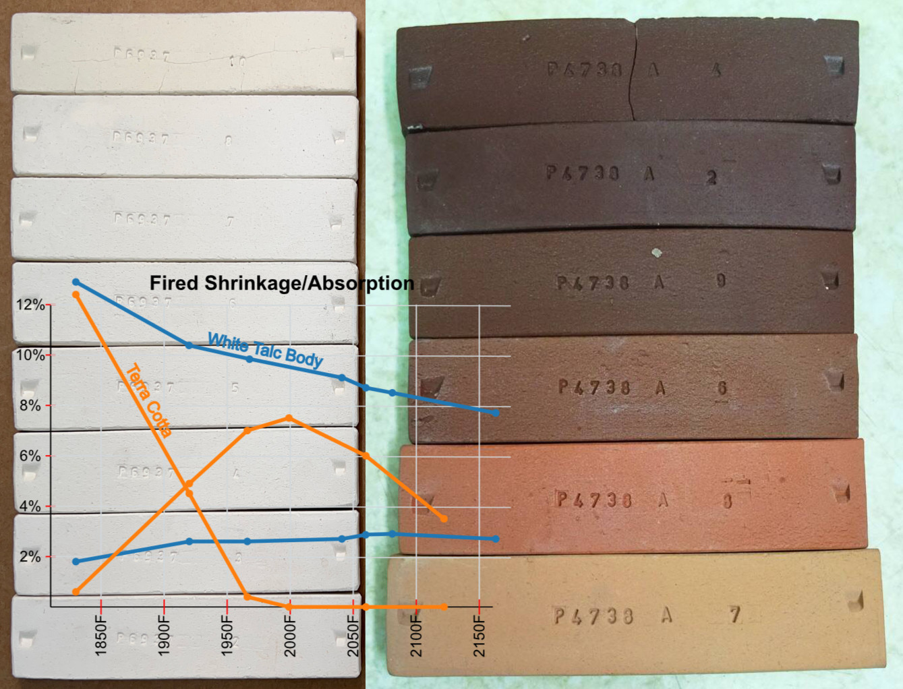
This picture has its own page with more detail, click here to see it.
These two sets of SHAB test bars are fired from coldest to hottest (bottom to top) through the range from cone 04 up to cone 4. The graph shows the decreasing porosities and increasing shrinkages as temperature rises. Note the terra cotta reaches maximum shrinkage and minimum porosity at 2000°F (above which it begins expanding and melting). The talc body, by contrast, slowly matures, reaching a minimum porosity of 7% at 2150°F. It thus only sinters, never reaching a state of anywhere near the maturity and strength of the terra cotta. Clearly, the latter is not only high in iron oxide, but also in fluxes (like K2O, MgO, Na2O, CaO, etc) - these are responsible for how fast it vitrifies. The point where maximum fired strength is produced is the third bar up, 1970°F on the graph. However, there are multiple issues: Ware will warp in the kiln, the terra cotta red color has been lost and LOI gases of decomposition will disrupt glazes (with bubbles, blisters and pinholes). The most practical temperature is the second bar up, adequate density, good color, better quality glaze surfaces. The talc body? Although it fires to poor maturity across the range, it has one trump card: It provides a good base for glazes, producing bright colors and no bubbles.
How to decide what temperature to fire this clay at?

This picture has its own page with more detail, click here to see it.
This is an extreme example of firing a clay at many temperatures to get wide-angle view of it. These SHAB test bars characterize a terra cotta body, L4170B. While it has a wide firing range its "practical firing window" is much narrower than these fired bars and graph suggest. On paper, cone 5 hits zero porosity. And, in-hand, the bar feels like a porcelain. But ware warps during firing and transparent glazes will be completely clouded with bubbles (when pieces are glazed inside and out). What about cone 3? Its numbers put it in stoneware territory, watertight. But decomposition gases still bubble glazes! Cone 2? Much better, it has below 4% porosity (any fitted glaze will make it water-tight), below 6% fired shrinkage, still very strong. But there are still issues: Accidental overfiring drastically darkens the color. Low-fire commercial glazes may not work at cone 2. How about cone 02? This is a sweet spot. This body has only 6% porosity (compared to the 11% of cone 04). Most low-fire cone 06-04 glazes are still fine at cone 02. And glaze bubble-clouding is minimal. What if you must fire this at cone 04? Pieces will be "sponges" with 11% porosity, shrinking only 2% (for low density, poor strength). There is another advantage of firing as high as possible: Glazes and engobes bond better. As an example of a low-fire transparent base that works fine on this up to cone 2: G1916Q.
Can terra cotta ware survive an open flame without cracking?
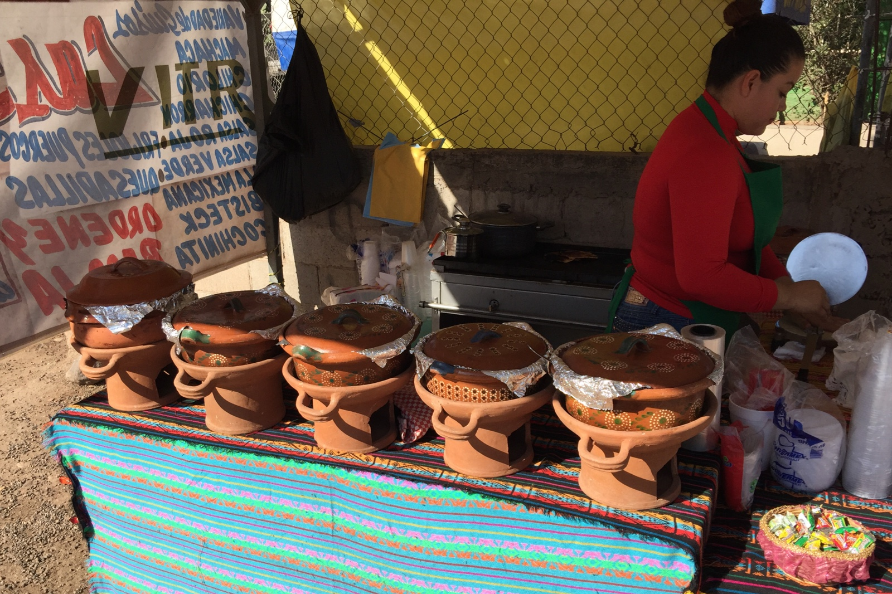
This picture has its own page with more detail, click here to see it.
It can if the flame is not too big! This is a roadside stand in Mexico in 2016. Each of these "cazuelas" (casseroles) have a small flame under them to keep the food inside warm. The pedestal is unglazed. The ware is thick and heavy. The casseroles are hand decorated with under-glaze slip colors with a very thin layer of lead glaze painted over (producing a terra sigilatta type appearance, but with brush stroke texture). These have been made and used here for hundreds of years. How can they not crack over an open flame? The flame is small and it is applied in the center of the bottom so that stresses are distributed radially and symmetrically. The ware is fired at what potters in Canada or the US would consider bisque temperature. It is porous, open and able to absorb the stresses. Some of them do have small cracks, but these seem to relieve stresses and prevent more. They know these pieces are not strong, so they treat them with care in heating, handling and washing. They know the glaze will leach lead or even dissolve if they put acidic liquids in them - so they don't do that.
What temperature is Mexican terra cotta pottery fired to?
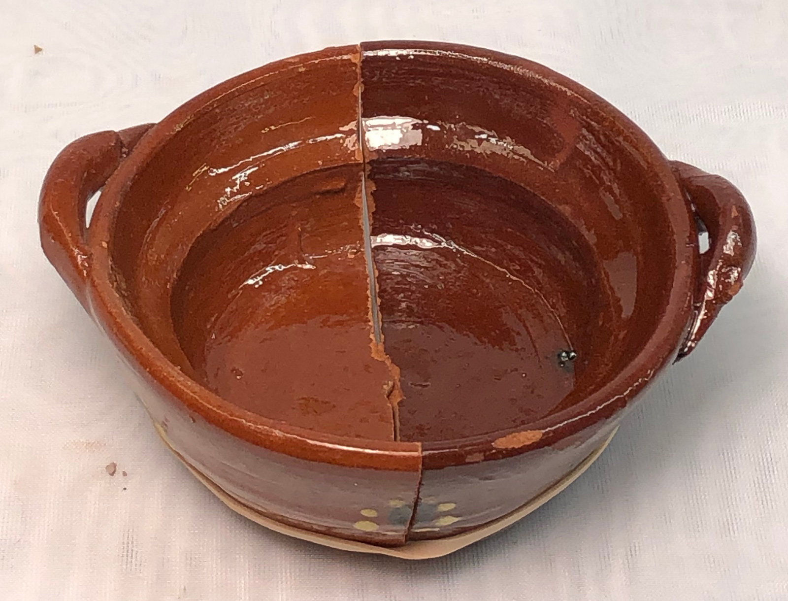
This picture has its own page with more detail, click here to see it.
This piece was made in Puebla, Mexico by a potter using traditional techniques and local clays. I have sawed it in half and refired one half at 1850F (Orton cone 04). That half (the right one) has not shrunk, which means it has not exceeded the temperature of the original firing (the piece was likely glazed in the dry state, not bisque fired). Notice how the refire has darkened the body color. This is probably happening because the lead glaze is maturing the surface of the clay (without the glaze it would take a much higher temperature to darken it to this extent, and, that would also entail shrinkage).
Craft store selling traditional terra cotta ware in Mexico 2020
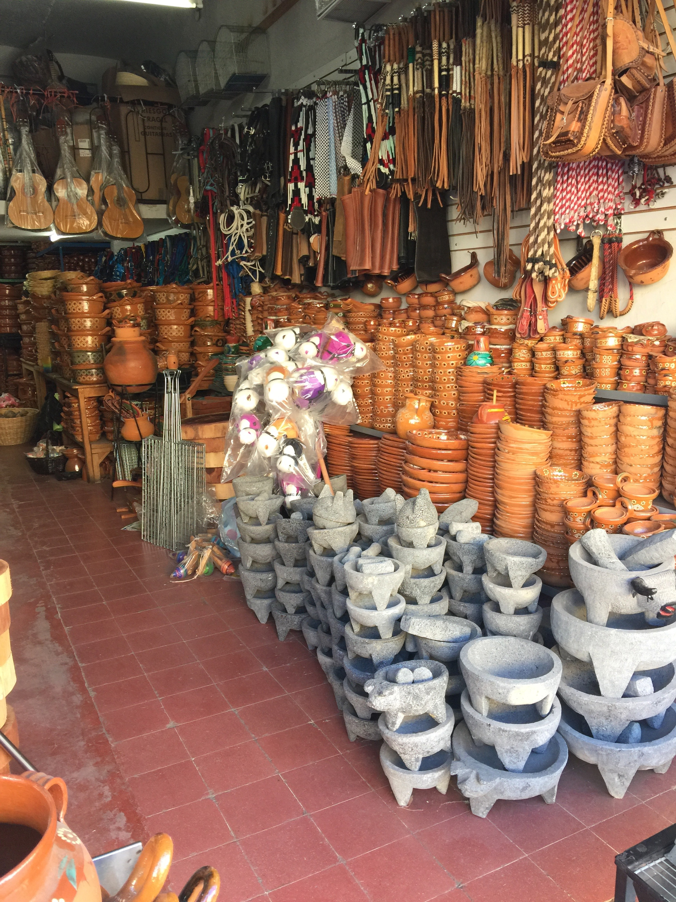
This picture has its own page with more detail, click here to see it.
This ware is used all over the city by street-side restaurants and food vendors. And routinely used in the house. It is all lead-glazed. That glaze does not craze and thus seals the otherwise porous surface against bacterial growth. They all know to handle it with care to minimize breakage. Surfaces and edges are rough, it is poorly finished but most people value the tradition enough to not even notice. Of course factory-made ware is much stronger and more functional, and cheaper. But at meals and occasions, many seek opportunities to use this at the table and show it off to their friends.
Mexican terra cotta bisque tile is "complicted"
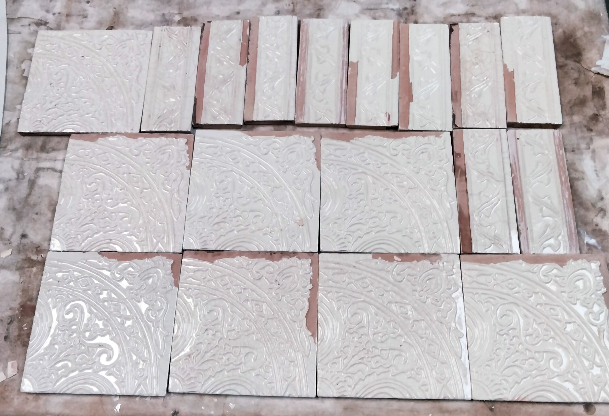
This picture has its own page with more detail, click here to see it.
Bisque tiles like these are made in large quantities in tile cities like Dolores, Quanajuato, Puebla and Mexico City (and in countless other smaller places). The name "Dolores", meaning "pains", may be appropriate for the workers who toil in the piece work sweat shops. They have little equipment and work long hours in difficult third-world conditions. Some even live in tents at the factory with no facilities. They are at the bottom rung of a multi-country industry that buys the bisque tile and glazes and decorates it (like those show here). Their lack of resources affects decorators downstream in an interesting way: They are unable to incorporate an essential additive into the clay to prevent soluble salts (effluoresence) buildup on the surface: barium carbonate. These keep increasing every time the tile gets damp and dries out. How is this dealt with? An engobe is applied to the bisque surface to create a white background for glazing. But that is not without issues (e.g. the flaking shown here).
An incredibly white engobe on terra cotta that produces durable and decoratable low fire ware
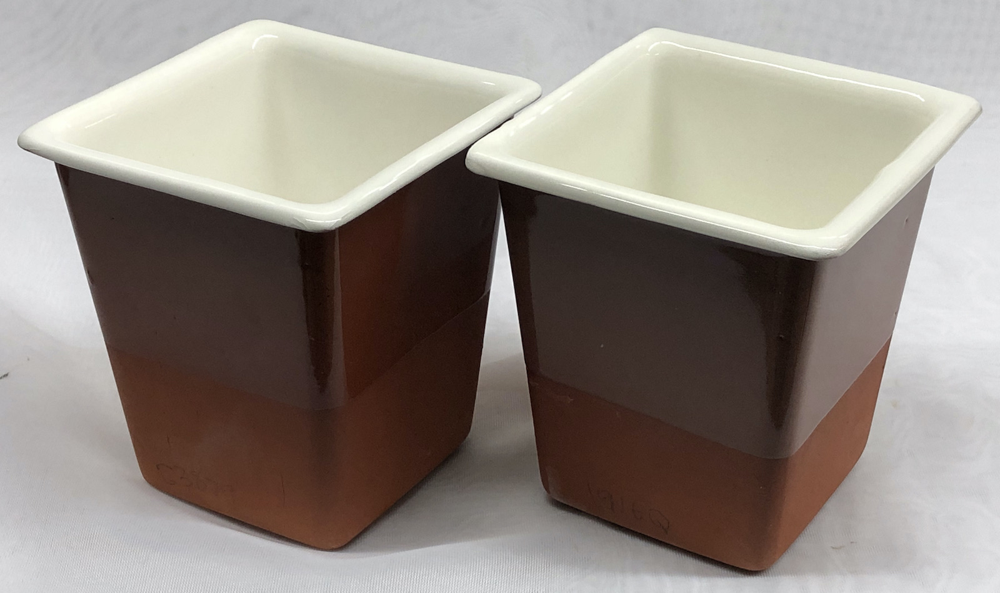
This picture has its own page with more detail, click here to see it.
I found seven secrets with recipe, process, glaze and firing to make durable terra cotta.
1. A lot of Zircopax, in this case 20% (for whiteness, opacity).
2. The whitest burning materials: New Zealand Halloysite as the kaolin and nepheline syenite as the feldspar.
3. 3% Veegum to gel the slurry (enabling low specific gravity for thin and even coating).
4. The recipe, L3685Z2, has 55% kaolin, that will certainly produce drying cracks. But 1% CMC gum stops that and makes it brushable. It even works on on bisque, I pour-applied it to the insides of these two slip-cast pieces, it drained to perfectly even coverage (in a very thin layer).
5. A terra cotta casting/throwing body to fit the engobe to (has the same fired shrinkage at a target temperature, e.g. cone 04): Initially I am using L4170B.
6. A clear glaze that fits and is transparent: Notice how much whiter the left one is, G3879. At the same thickness as the G1916Q on the right, it is more transparent, better transmitting the white of the engobe.
7. The right firing curve: The 04DSDH drop-and-hold schedule for defect free surfaces.
Transparent glaze quality on terra cotta is about multiple things
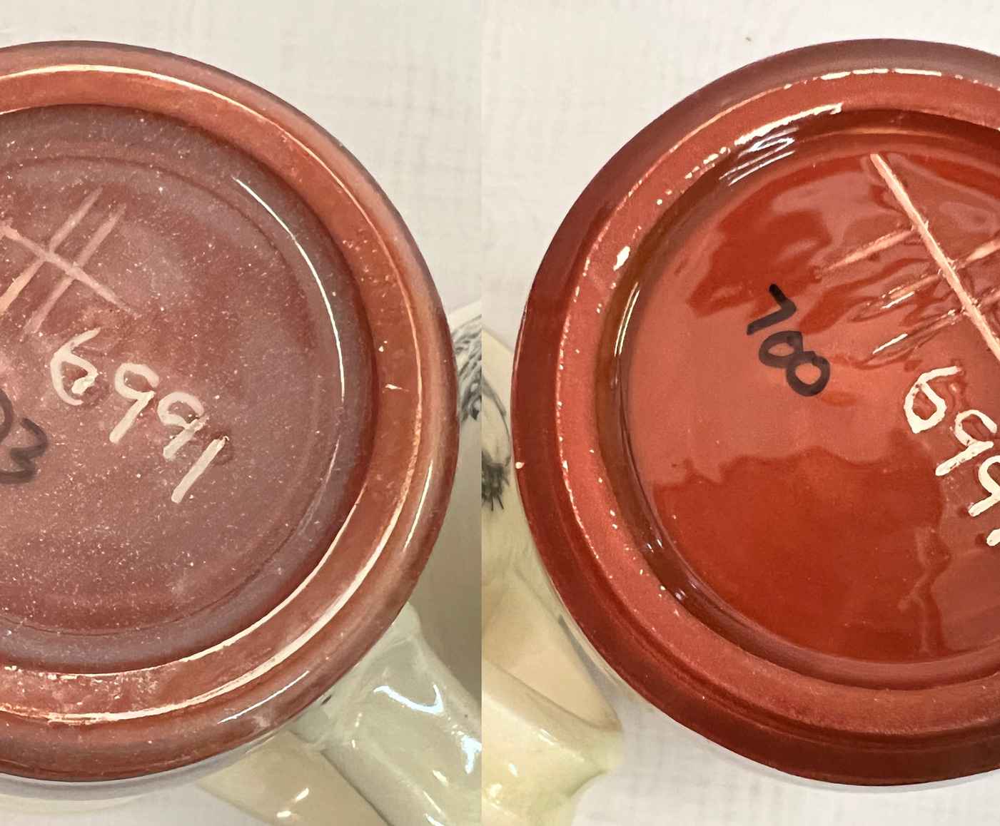
This picture has its own page with more detail, click here to see it.
Glaze chemistry, slurry preparation and application thickness. These two mugs are made from the same clay, Plainsman Snow. Amaco V-303 Terracotta underglaze has been applied to each. These two glazes have the same chemistry. But the one on the left was mixed as a dipping glaze, from a recipe, then slurried and then sieved at 80 mesh. However, the sieve did not break up the agglomerates of Veegum and New Zealand kaolin. This problem was resolved by mixing batches of the glaze in a kitchen blender at top speed. The glaze on the right is Spectrum 700, a commercial brushing glaze - it has been vigorously mixed and sieved as part of their production process. There is a second issue here also: Thickness. The mug on the left was dipped and held in too long, getting it on too thick. On the right, the gummed glaze was painted on - three thin coats were evenly applied, enabling careful control of thickness.
G1916Q transparent on terra cotta body at cone 06, 05, 03
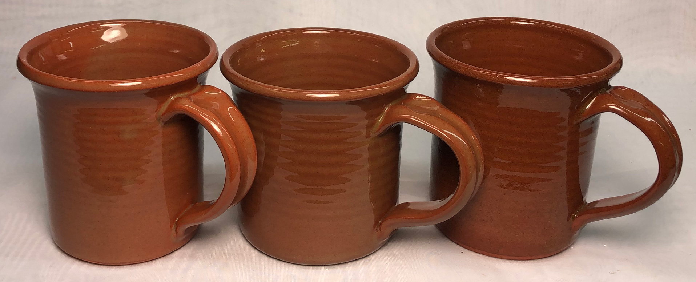
This picture has its own page with more detail, click here to see it.
The body is Plainsman L215. We used the 04DSDH firing schedule. The G1916Q glaze is inexpensive to make so we have a 2-gallon bucket. It has dipping properties much like a stoneware glaze (because of the 15% ball clay it is thixotropic) so it is easy to apply quickly and evenly. For most terra cottas, body strength increases dramatically by cone 03. However, the most transparent and glassy glaze surface happens at cone 06. Terra cotta bodies need to be bisque-fired fairly low (e.g. cone 06) to have enough porosity to work well with dipping glazes. After cone 04 they generate increasing amounts of gases (as various particle species decompose within), for this reason the glazes can have more micro-bubble clouding or tiny dimples in the surface. This glaze has 2% iron oxide added as a fining agent to remove the bubbles. That iron also reddens the color and variegates the surface somewhat. Even though the surface character at cone 03 is not as smooth, it has a natural charm, and the color is very rich. And that piece has stoneware durability and strength.
Iron oxide as a fining agent to debubble a low fire transparent
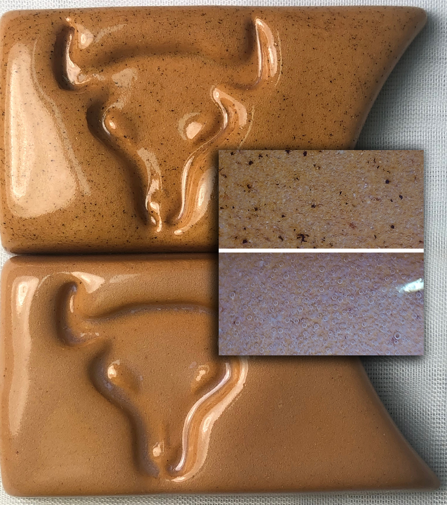
This picture has its own page with more detail, click here to see it.
These terra cotta clays were bisque fired at cone 04 and glaze fired to 04 using the 04DSDH schedule. The glaze is G1916Q, an expansion-adjustable cone 04 clear. That schedule alone is often enough to get transparent, defect free glazes in many situations. But not in this case. The solution was to add a fining agent. In this case we added 2% red iron oxide (to the top glaze). The particles of iron floating in the melt acted as a congregating points for bubbles, helping them to escape. And we got a bonus: a more interesting aesthetic. A 1% addition also worked, but not as well (we have settled on 2% iron and screening the glazes to 100 mesh). Screening out the larger particles slightly degraded the fining performance (so we have to accept the tiny specks). Iron does not always workin other situations. Other fining agents we have used at cone 6 do not work in this situation (e.g. 2% Zircopax, Alumina). Of course, this glaze will fire amber on a white body.
These two transparent glazes are opposites:
In melt fluidity and surface tension
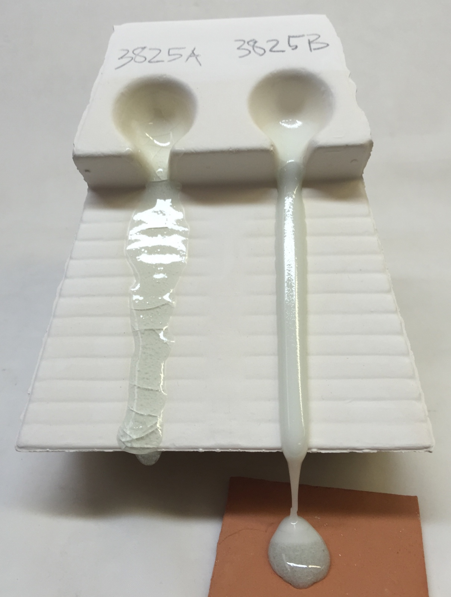
This picture has its own page with more detail, click here to see it.
This cone 04 flow tester compares two commercial low-fire transparent glazes. Their different chemistry strategies are revealed by the shape of these melt flows. While 3825B appears to have the higher melt fluidity, it also has much higher melt surface tension. This is evident in the narrow, rope-like stream and the way the flow meets the runway at a high angle before pulling into a rounded bead. A, by contrast, spreads and wets the runway, meandering downward in a broad, flat and relatively bubble-free river.
This difference is important in low-fire ware because these glazes must pass far more gases and bubbles than high-temperature glazes. The lower surface tension of A aids bubble release and healing after bubbles break. A is Amaco LG-10. B is Crysanthos SG213 (Spectrum 700 behaves similarly, although flowing less). Both approaches have advantages and disadvantages and are worth testing in your application.
Match the firing shrinkage of an engobe to a terra cotta
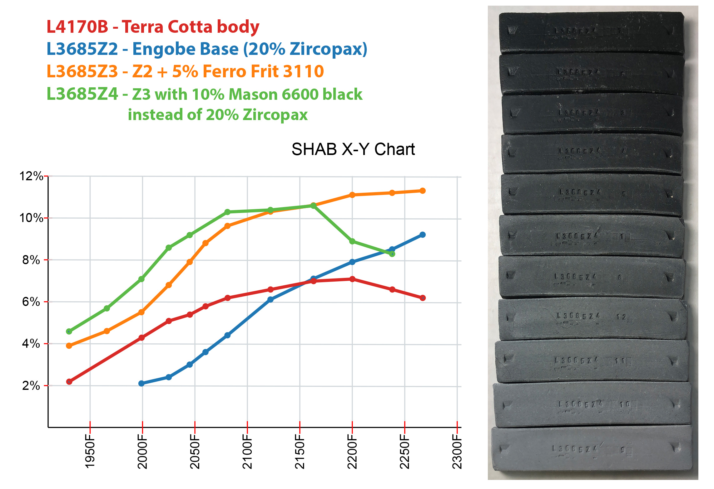
This picture has its own page with more detail, click here to see it.
These lines plot the firing shrinkages for three versions of L3685Z2 engobe. Each line was derived by doing a multi-temperature SHAB test. Notice the terra cotta body I want to match (red line) and the black engobe (green line) do not cross anywhere. That means there is no temperature at which they fit each other (the engobe always has 2% or more firing shrinkage). Notice the L4170B terra cotta fits the white version, Z2, at 2150F (red line crosses blue line, but the body is over-fired by that point). For a fit at my preferred 2000F (cone 02) I need the Z4 engobe to shrink 2% more (a 3% addition of frit 3110 will do that). What about the black Z4? That is the opposite situation, it already contains 5% frit, removing that will drop that green line about 3%, hitting the red line at 2000F (and following it all the way down past 1950 into the cone 04 range). I ignored all of this and used the Z2 white on L4170B, L210 and L215. It looked good on most pieces, but sure enough, it did crack around abrupt contours on some. Of course, this does not assume a thermal-expansion-match of body and engobe.
Why does this terra cotta clay bubble glazes?
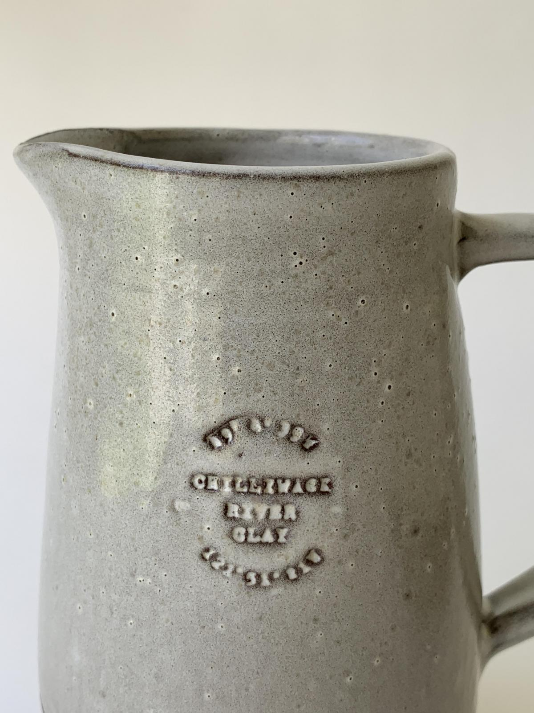
This picture has its own page with more detail, click here to see it.
But this does not happen when a piece is glazed only on the inside or outside. Why? As terra cottas approach vitrification they generate gases as particles within decompose. At cone 04 it is not an issue, transparent glazes will fire ultra-clear and defect-free. But fire that same body to cone 02 or 01 and the glaze can be filled with bubbles and surface blisters. If gases have no other way to escape the body except by bubbling up through the glaze, this is what happens. But, where adjacent unglazed surfaces exist, all the gases will route out through it, leaving the glazed one defect free. Of course that is not practical here. So the only solution is to fire lower. If vitrification is really needed then a frit must be added to the body to densify it at that lower temperature.
Cross section comparison between cone 04 terra cotta and cone 6 iron stoneware
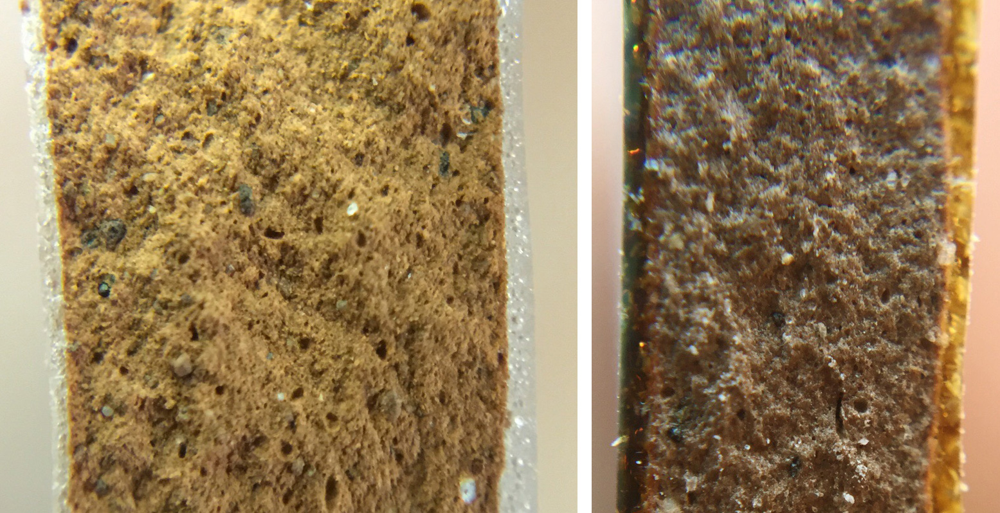
This picture has its own page with more detail, click here to see it.
Both of these bodies have a range of particle sizes (from 42 mesh and finer). The glaze on the cone 04 section (close-up on the left) is very well melted, but its interfacial zone with the body is narrow, it is basically just "stuck on" the surface (so it must be tuned to match the thermal expansion of the body to prevent crazing/shivering). The body is not developing any clearly visible glassy phases, meaning that any strength it has is purely a product of sintering. On the right, the interfacial zone of glaze-with-stoneware-body is wider. The body has incipient melting (tiny feldspar particles are fusing and beginning to dissolve into the surfaces of surrounding ones). The color has changed from red to brown.
How bad can efflorescence on terra cotta be?
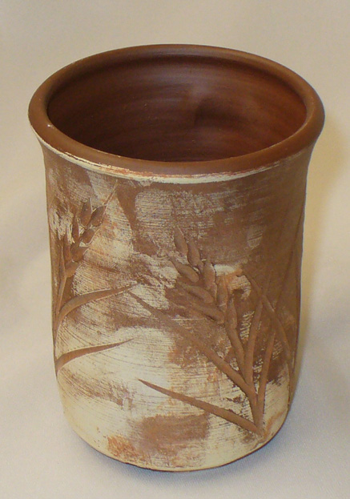
This picture has its own page with more detail, click here to see it.
Like this! This terra cotta clay matures to good strength around 1950F. Notice how the soluble salts have concentrated on the outer and most visible surface. The piece was dried upside down so, of course, all the water had to escape through that route. A complicating factor is how handling of the piece at the leather hard stage has made it even more unsightly. This problem is common in many terra cotta materials but can also surface in others. A tiny addition of barium carbonate can precipitate the salts inside the clay matrix so they do not come to the surface on drying.
Chipping edges on handmade terra cotta tile. Why?
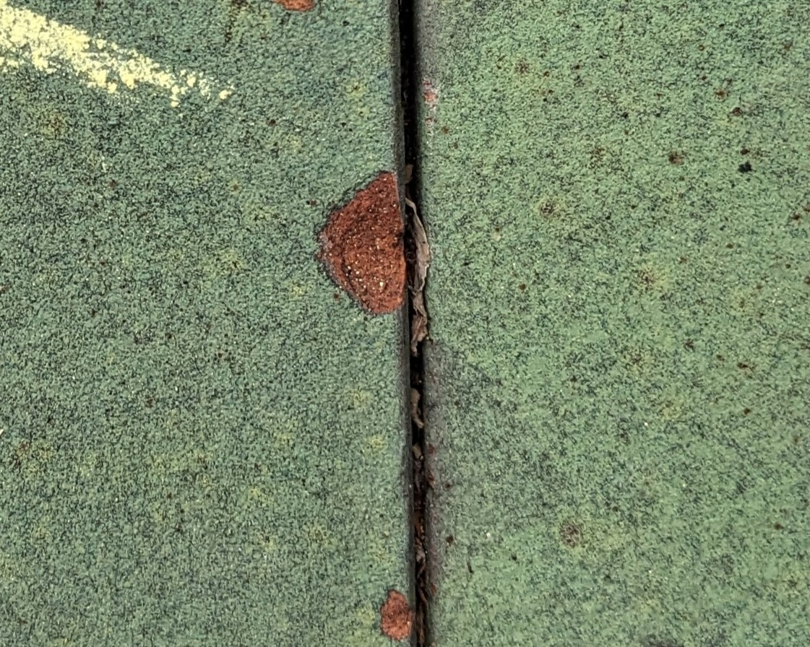
This picture has its own page with more detail, click here to see it.
Long after installation, handmade clay tiles can be susceptible to chipping at the corners and edges. This is more of an issue when the tile is glazed. As the temperature of the tile increases from the heat of the sun, the dimensions increase and they can begin to press upon each other. This can create high compressive stresses at the bearing points. If the gap between the tiles is not sufficient, the stress at the bearing point can continue to build until a piece cracks out of the corner like this. Terracotta tiles are most susceptible because they have much lower strength than vitrified ones. Since such handmade tiles have been in use since ancient times makers have always needed to compensate for this issue.
Of course the installers of the tile bear the main burden of avoiding this problem. However, in the manufacture of the tile itself, various things can be done to minimize the issue. For example, if an engobe is used, pay attention to its compatibility to the body (e.g. it needs a similar firing shrinkage and thermal expansion). Likewise with glazes, they should fit (not be under excessive compression or tension). Rounded corners are better than angular ones. Another option is to fire the tile to a higher temperature to get more strength - with caution since this can significantly increase firing shrinkage.
Test bars of different terra cotta clays fired at different temperatures

This picture has its own page with more detail, click here to see it.
Bottom: cone 2, next up: cone 02, next up: cone 04. You can see varying levels of maturity (or vitrification). It is common for terra cotta clays to fire like this, from a light red at cone 06 and then darkening progressively as the temperature rises. Typical materials develop deep red color around cone 02 and then turn brown and begin to expand as the temperature continues to rise past that (the bottom bar appears stable but it has expanded alot, this is a precursor to looming rapid melting). The top disk is a cone 10R clay. It shares an attribute with the cone 02 terra cotta. Its variegated brown and red coloration actually depends on it not being mature, having a 4-5% porosity. If it were fired higher it would turn solid chocolate brown like the over-fired terra cotta at the bottom.
Some bodies cannot be fired to even near zero porosity
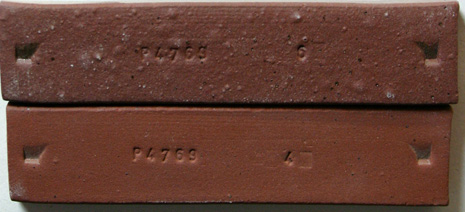
This picture has its own page with more detail, click here to see it.
Bloating in a high iron raw clay ground to 42 mesh (Plainsman M2). It is still stable, dense and apparently strong at cone 4 (having 1.1% porosity). But at cone 6 (top bar) it is bloating badly. At cone 5 the clay experiences the early stages of bloating. Cone 4 is thus "dangerous territory" for this particular clay. A reminder of this can be seen by putting on a transparent glaze - it fills with clouds of micro-bubbles from off-gassing that has begun well below cone 4.
Cone 2: Where we see the real difference between terra cottas and white bodies

This picture has its own page with more detail, click here to see it.
The terra cotta (red earthenware) body on the upper left is melting, it is way past zero porosity, past vitrified. The red one below it and third one down on the right have 1% porosity (like a stoneware), they are still fairly stable at cone 2. The two at the bottom have higher iron contents and are also 1% porosity. By contrast the buff and white bodies have 10%+ porosities. Terra cotta bodies do not just have high iron content to fire them red, they also have high flux content (e.g. sodium and potassium bearing minerals) that vitrifies them at low temperatures. White burning bodies are white because they are more pure (not only lacking the iron but also the fluxes). The upper right? Barnard slip. It has really high iron but has less fluxes than the terra cottas (having about 3% porosity).
Terra cotta clays are not created equal
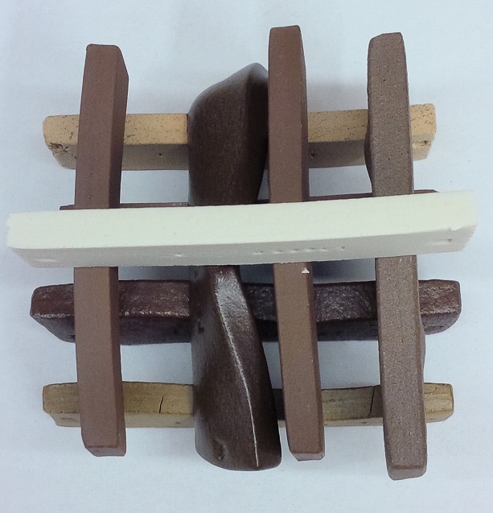
This picture has its own page with more detail, click here to see it.
A variety of terra cotta clay test bars (and a low temperature porcelain) that have been fired to cone 5. The measurement and weight data from these bars is entered into the appropriate recipes in my account at Insight-live.com; it uses that data to calculate shrinkage and porosities. I will also attach link this picture to each of the recipes. Some are quite vitreous and stoneware-like, some are in the advanced stages of melting, others could take more heat yet.
Red burning, customer-found terra cotta clays charachterized
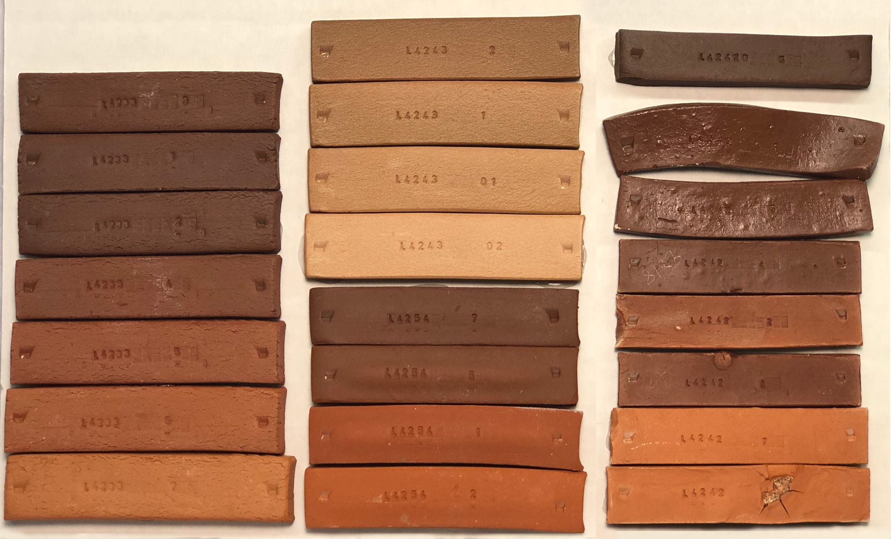
This picture has its own page with more detail, click here to see it.
We tested four different clays (brought in by customers). One is from BC and three from Alberta. These fired sample bars show rich color, low soluble salts and high density and strength at very low temperatures. L4233 (left): Cone 06 to 3 (bottom to top). Reaches stoneware-density at cone 02 (middle bar). Plasticity is very low (drying shrinkage is only 4.5%). But, it is stable even if over-fired. L4254 (center bottom): Cone 04,02,3,4 (bottom to top). Very fine particled but contains an organic that is gassing and bloating the middle two bars. L4243: Fires lighter and looks stable here (cone 02,01,1,2 shown) but melts suddenly less than a cone above the top bar (well before vitrification is reached). L4242 (right): Hyper-plastic, with 12% drying shrinkage! Already melting by cone 02 (third from top). Achieves almost zero porosity (porcelain density) at cone 04 (#2 bar). Even when mixed with 20% kaolin and 20% silica it still hits zero porosity by cone 1. What next? I'll mix L4233 (left) and L4242 (right), that should produce stoneware density at cone 02 (about 1% porosity).
What happens when a terra cotta body is fired to cone 6

This picture has its own page with more detail, click here to see it.
It may not melt, but will certainly warp and blister/bloat (as show here). If there is inadequate kiln wash or silica sand it will also stick to the kiln shelf.
The porcelain is harder, but the terra cotta has it beat for thermal shock!

This picture has its own page with more detail, click here to see it.
This terra cotta cup (center) is glazed with G2931G clear glaze (Ulexite based) and fired at cone 03. It survives 30 seconds under direct flame against the sidewall and turns red-hot before a fracture occurs (the unglazed one also survived 30 seconds, it only cracked, it did not fracture). The porcelain mug (Plainsman M370) is glazed with G2926B clear, it survived 15 seconds (even though it is much thinner). The porcelain is much more dense and durable, but the porous nature of the earthenware clearly withstands thermal shock much better. It is actually surprisingly durable.
Terra cotta gets brittle when over fired
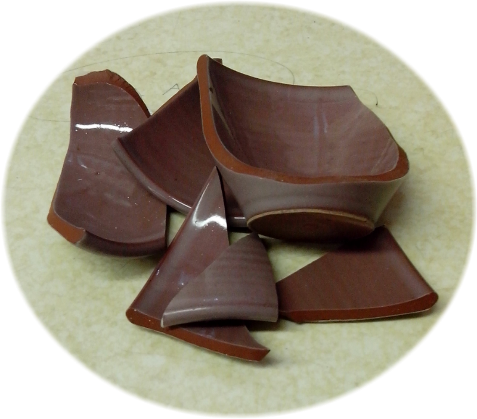
This picture has its own page with more detail, click here to see it.
An excellent example that demonstrates the brittleness typical of vitrified terra cotta bodies. This bowl was fired to cone 02 and rung like a tuning fork when struck with a spoon. The body is dense like a porcelain and at appeared to be incredibly strong (this body is much more vitreous than an average terra cotta would be). However after a few more taps with the spoon it broke in two! It is brittle! Very hard, but brittle. At first I thought it might be that the glaze is under compression, but when I dropped the halves they did not shatter in the manner characteristic of compressed glaze, and they broke with razor sharp edges (like a vitrified porcelain does). So firing for this body must stop short of the most dense matrix possible to avoid this brittleness.
Creating a Body/slip Equilibrium in Terra Cotta Ware
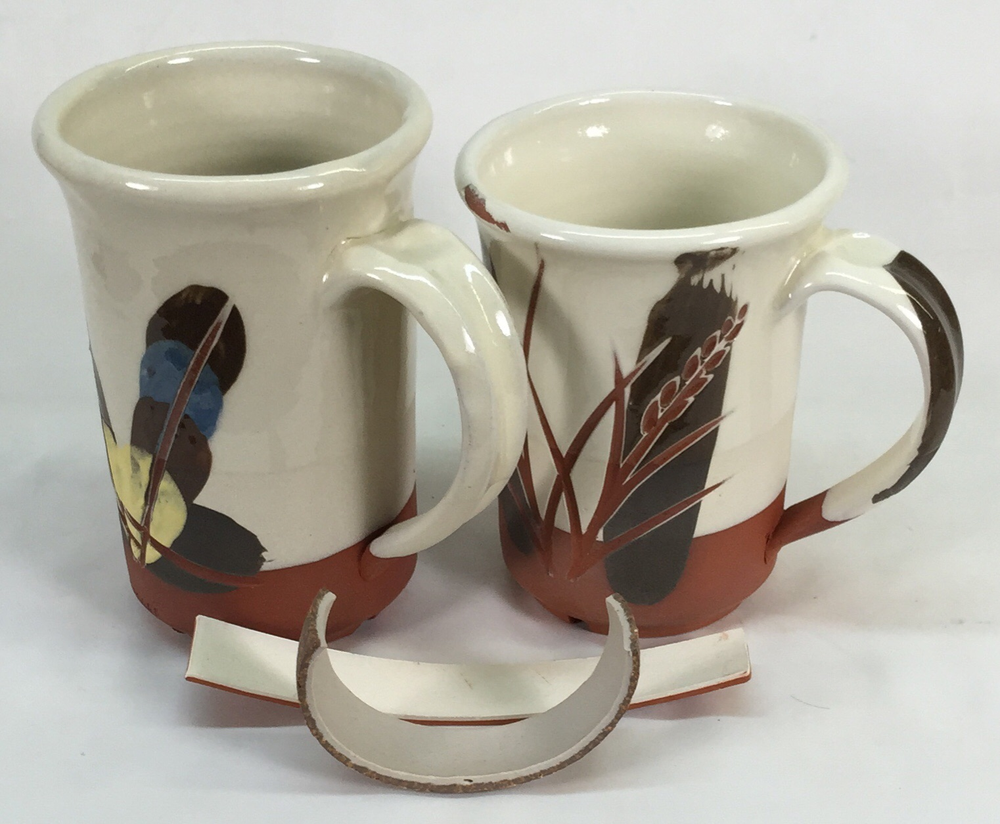
This picture has its own page with more detail, click here to see it.
L3685X white slip (left mug) has 5% more frit than Y (right). The frit is a melter, creating more glass bonds to adhere it to the body (it also hardens it and darkens the color a little). But the frit also increases firing shrinkage, 'stretching' the white layer on the body as the kiln cools (the slightly curled bi-clay bar demonstrates that). However the glaze, G2931G, is under some compression (to prevent crazing), it is therefore 'pushing back' on the white slip. This creates a state of equilibrium. The Y slip on the right is outside the equilibrium, it flakes off at the rim because the bond is not good enough. Adding more frit, the other side of the balance, would put the slip under excessive tension, reducing ware strength and increasing failure on exposure to thermal shock (the very curled bi-clay bar in the front, not this clay/slip demonstrates the tension a poorly fitted slip could impose).
Perfect storm to create massive bubbling in a low fire kiln
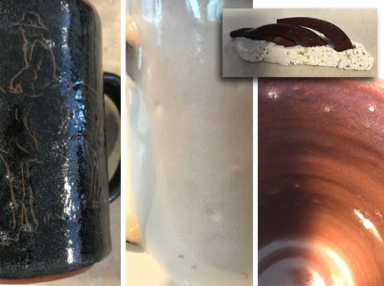
This picture has its own page with more detail, click here to see it.
The clay is terra cotta. It is volatile between 04 and 02, becoming dramatically more dense and darker colored. The electronic controller was set for cone 03, but it has fired flat (right-most cone), that means the kiln went to 02 or higher. At 02 the body has around 1% porosity, pushing into the range where the terra cotta begins to decompose (which means lots of gas expulsion). The outsides of some pieces blistered badly while the insides were perfect (because they got the extra radiant heat). The firing was slow, seven hours. Too long, better to make sure ware is dry and fire fast. Another problem: The potter was in a rush and the pieces were not dry. These factors taken together spelled disaster.
Refiring a terra cotta mug that had already bubbled only made blistering worse
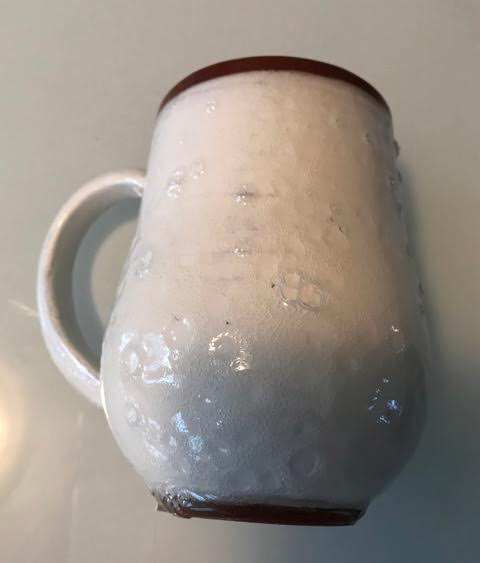
This picture has its own page with more detail, click here to see it.
Plus the glaze ran even more. The main problem was that the original firing was taken too high, about cone 02 (seven hour schedule). This body nears zero porosity there and is beginning to decompose. That generates gases. The second firing was taken to cone 03 in four hours. But the glaze just percolated more. However freshly glazed bisque ware in that same firing came out perfect. Lessons were learned. Fire faster. Keep it cone 03 or lower. Do not put the glaze on too thick. Use self-supporting cones to verify the electronic controller, they are much more accurate than regular cones.
The best way to opacify a low-temperature terra cotta glaze
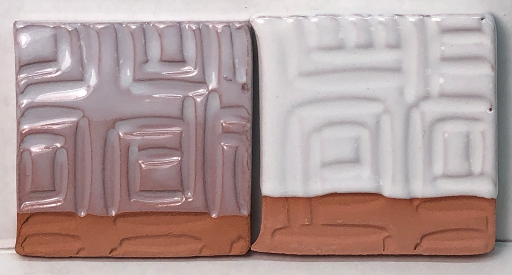
This picture has its own page with more detail, click here to see it.
Tin oxide is a powerful opacifier, but the 5% in this Frit 3124 based Arbuckle Majolica cone 04 recipe on the left is not sufficient. Adding 10% zircon (e.g. Zircopax, Superpax) produces the one on the right. Would just using 15% zircon be better? No. More zircon means a stiffer melt and more issues with crawling (notice the small bare spots on the right edge). This could be managed by the addition of CMC gum or a higher clay content to get better adhesion and dry hardness). But another improvement would be worth trying first: Use 4% tin and 8% zircon. That should opacify enough and present fewer problems with crawling.
A terra cotta bowl made in Turkey
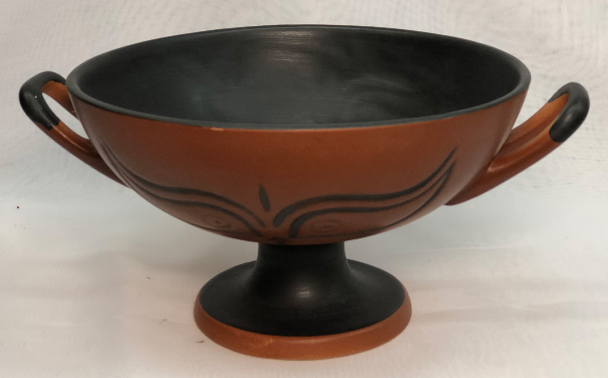
This picture has its own page with more detail, click here to see it.
Turkey has milleniums of experience with terra cotta. This piece uses an engobe covering on both the outside and inside. And the Turks have developed the technology to process the clays enough that they can be fired to almost porcelain strength (although this piece is low fired and porous). This piece was given to me by a resident artist in the studio at the Kale Seramik factory in Çan, Turkey (around 2002). At the time it was the biggest ceramic factory complex in the world, making everything from fine china to bricks. Many potters do not really understand what terra cotta is.
Inbound Photo Links
|
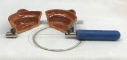 Cutting a terra cotta dish in half with a diamond saw from Amazon |
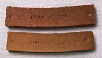 Problem at cone 1 |
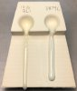 Two low fire transparent highly fritted glaze recipes for pottery |
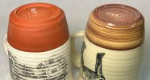 The glaze firing reveals that the specific gravity of this V-303 terra cotta under glaze is too low |
This is what is possible with terra cotta! |
Links
| Glossary |
Bone China
A ceramic whose priorities are translucency, whiteness, fired strength and resistance to thermal shock failure. |
| Glossary |
Earthenware
What is the difference between earthenware and a regular stoneware body? Earthenwares lack the glass development to fill voids and glue particles. |
| Glossary |
Majolica
Majolica is a tradition of Italian Renaissance white opaque glazed red earthenware having brightly colored brushwork decoration. Knowing some technical details will help you better succeed with the process. |
| Glossary |
Secondary Clay
Clays form by the weathering of rock deposits over long periods. Primary clays are found near the site of alteration. Secondary clays are transported by water and laid down in layers. |
| Glossary |
Thermal shock
When sudden changes in temperature cause dimensional changes ceramics often fail because of their brittle nature. Yet some ceramics are highly resistant. |
| Glossary |
Clay Body Porosity
In ceramics, porosity is considered an indication of density, and therefore strength and durability. Porosity is measured by the weight increase when boiled in water. |
| Glossary |
Primitive Firing
The use of some traditional firing techniques is still popular among modern potters and sculptors (who are accustomed electric and gas kilns, often with computer controllers). |
| Glossary |
Low Temperature Glaze
In ceramics, glazes are loosely classified as low, medium and high temperature. Low temperature is in the cone 06-2 range (about 1800F-2000F). |
| Glossary |
Slipware
Slipware, in the UK, is terra cotta pieces decorated at leather hard with thixotropic high ball clay slips, then bisque fired and clear glazed with lead bilisicate. |
| Glossary |
Artware
Artware, to potters and hobbyists, is pottery made from white-burning clays fired at low temperatures with brightly coloured glazes and decorated using decals, underglazes, lustres, etc. |
| Materials |
Iron Oxide Red
Red iron oxide is the most common colorant used in ceramic bodies and glazes. As a powder, it is available in red, yellow, black and other colors. |
| Articles |
Monoporosa or Single Fired Wall Tiles
A history, technical description of the process and body and glaze materials overview of the monoporosa single fire glazed wall tile process from the man who invented it. |
| Recipes |
L3724F - Cone 03 Terra Cotta Stoneware
An experimental Zero3 using Plainsman 3D clay |
| Media |
How to Apply a White Slip to Terra Cotta Ware
I will show you some secrets of making a base engobe (or slip) apply to leather hard terracotta ware in a thick, perfectly even layer. |
| URLs |
https://insight-live.com/insight/share.php?z=wK2ZW14yNo
Five low fire glazes: Which is the best? |
| URLs |
https://zellige-tiles.com/
Zellige terra cotta tile from Morocco Zellige is a handcrafted clay tile from Morocco. Zellige tiles are known for their variations in tone, shine, flatness and depth of the glazing, surface texture, shape and size. Each Zellige tile is thus unique. |
| URLs |
https://en.wikipedia.org/wiki/Deichmann_pottery
Deichmann Pottery - New Brunswick, Canada - terra-cotta pottery from 1935 to 1963 Canada's first family of functional ceramics, Kjeld and Erica Deichmann produced terra cotta pottery in New Brunswick from 1937 to 1963. |
| URLs |
https://en.wikipedia.org/wiki/Saltillo_tile
Saltillo tile is a popular type of rough unglazed handmade terracotta tile originally manufactured in Saltillo, Coahuila, Mexico. They are suitable in warm climates and require constant vigilance to avoid exposed porosity (by sealing). |
| Typecodes |
Clay sealers
Many ceramics are either porous by nature or by necessity. For example, stonewares need to be non-vitreous enough that they do not warp or blister on firing. Red earthenwares must be porous in order to have the red color (they go brown when fired higher). White talc or dolomite low-fire clay bodies always have high porosity. Bricks must have minimal firing shrinkage, which guarantees substantial porosity. Even porcelains can blister and it is common to cut back on feldspar to give them more margin for overfiring - that brings porosity. If water penetration must be prevented all of these need to be sealed, these are some of the methods. |
 PayPal | No tracking, No ads, No paywall, No transient content! Just organized, concise information constantly updated and improved. Was this helpful? Consider supporting me. |
| By Tony Hansen Follow me on        |  |
Got a Question?
Buy me a coffee and we can talk 

https://digitalfire.com, All Rights Reserved
Privacy Policy